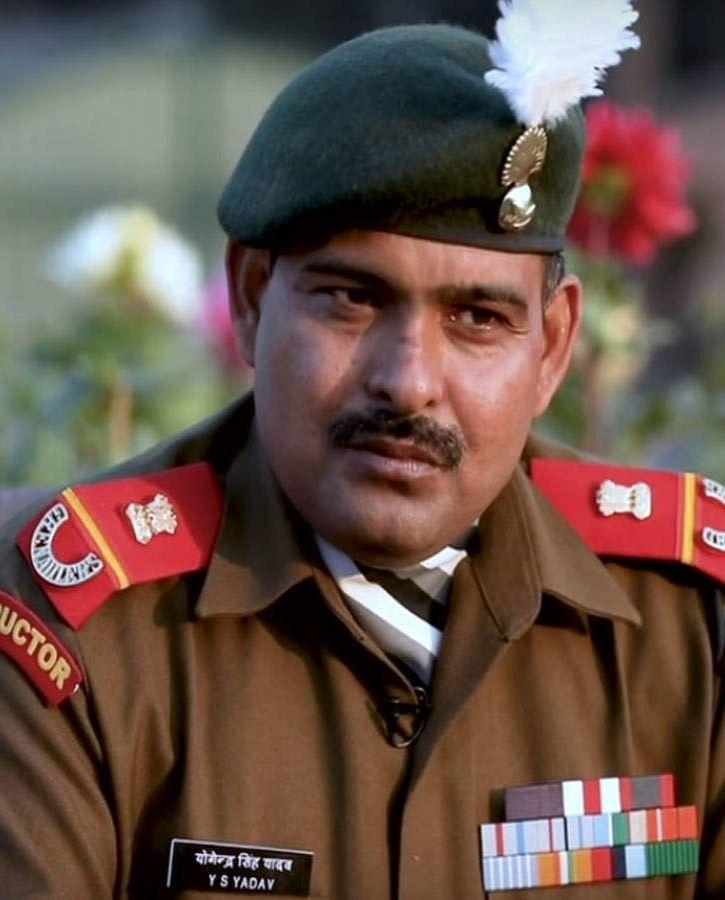

Yogendra Singh Yadav

Yadav enlisted with the 18 Grenadiers, and part of the Ghatak Force commando platoon, tasked to capture three strategic bunkers on Tiger Hill in the early morning hours of 4 July 1999. The bunkers were situated at the top of a vertical, snow-covered, 1,000 ft (300 m) cliff face. Yadav volunteered to lead the assault, climbed the cliff face, and installed ropes that would allow further assaults on the feature. Halfway up, machine gun and rocket fire came from an enemy bunker, killing the platoon commander and two others. In spite of being hit by multiple bullets in his groin and shoulder, Yadav climbed the remaining 60 feet (18 m) and reached the top. Though severely injured, he crawled to the first bunker and lobbed a grenade, killing four Pakistani soldiers and neutralizing enemy fire. This gave the rest of the platoon the opportunity to climb up the cliff face[7] bunker along with two of his fellow soldiers and engaged in hand-to-hand combat, killing four Pakistani soldiers. The platoon subsequently succeeded in capturing Tiger Hill. Though Yadav was hit by 12 bullets he played a major role in its capture.[8]
The Param Vir Chakra was announced for Yadav posthumously, but it was soon discovered that he was recuperating in a hospital, and it was his namesake who had been slain in the mission.
Param Vir chakra citation
The Param Vir Chakra citation on the official Indian Army website reads as follows:
Grenadier Yogendra Singh Yadav was part of the leading team of Ghatak Platoon tasked to capture Tiger Hill on the night of 3/4 July 1999. The approach to the top was steep, snow bound and rocky. Grenadier Yogendra Singh Yadav, unmindful of the risk involved, volunteered to be in the lead and fixed rope of his team to climb up. On seeing the team, the enemy opened intense automatic grenade, rocket and artillery fire killing the commander and two of his colleagues and the platoon was stalled. Realising the gravity of the situation, Grenadier Yadav crawled up to the enemy position to silence it and in the process sustained multiple injuries. Unmindful of his injuries and in the hail of enemy bullets, Grenadier Yadav continued climbing towards the enemy positions. Lobbing grenades and continuously firing from his weapon, he killed four enemy soldiers in close combat and silenced the automatic fire. Despite multiple injuries, he refused to be evacuated and continued the charge. Inspired by his gallant act, the platoon charged on to the other positions with renewed punch and captured Tiger Hill Top.
Grenadier Yogendra Singh Yadav displayed the most conspicuous courage, indomitable gallantry, grit and determination under extreme adverse circumstances.
Home